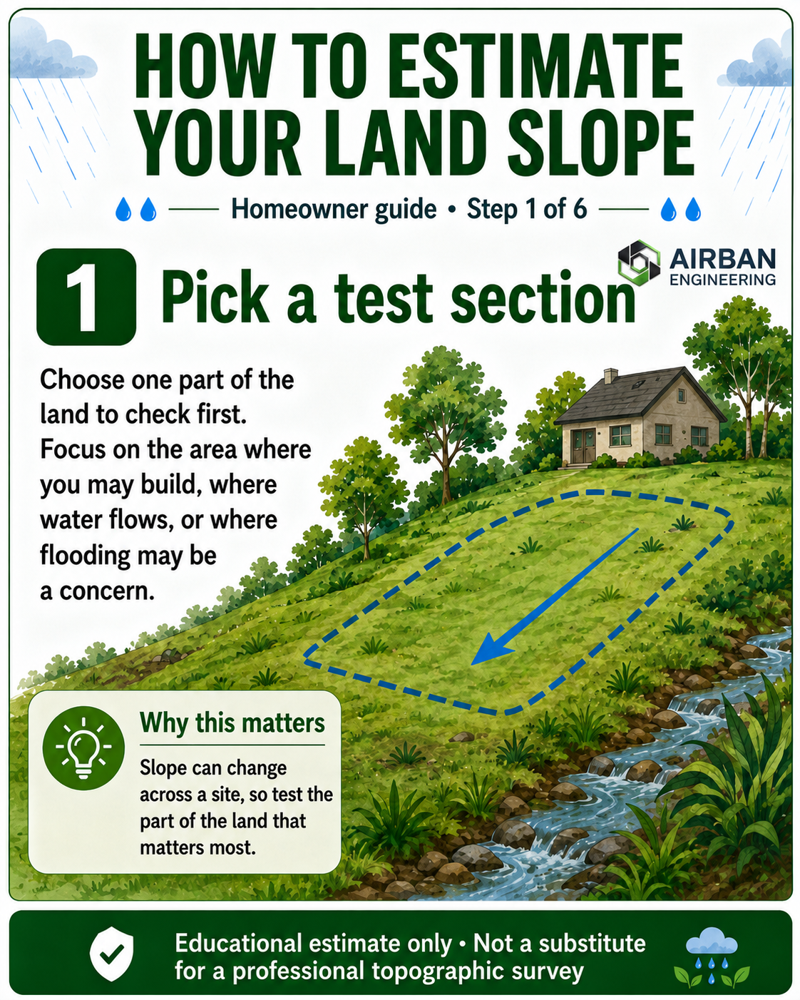
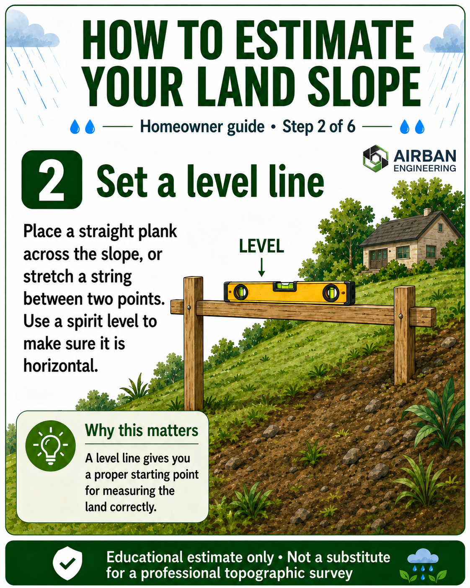
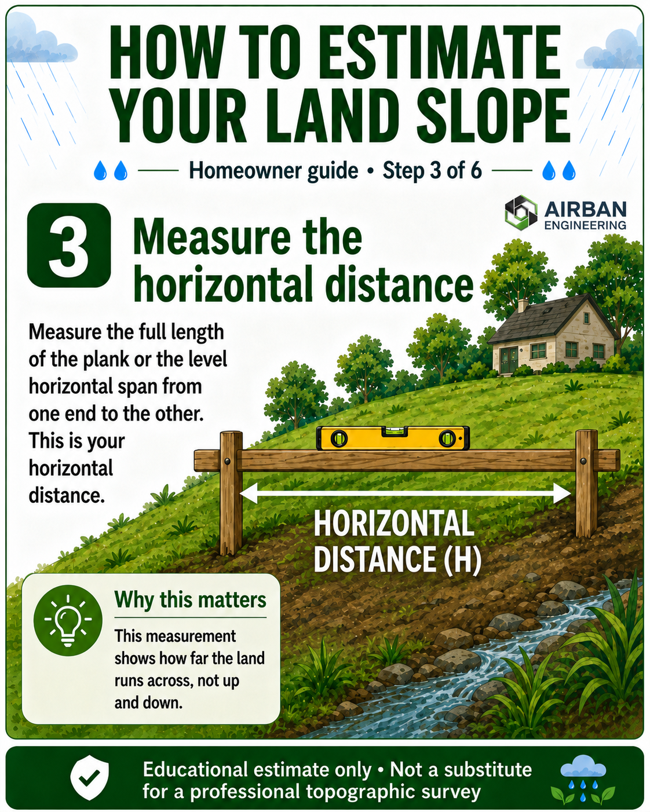
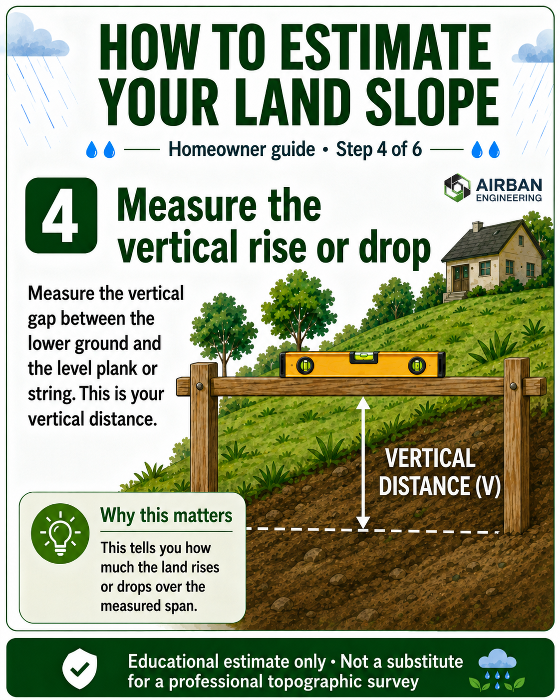
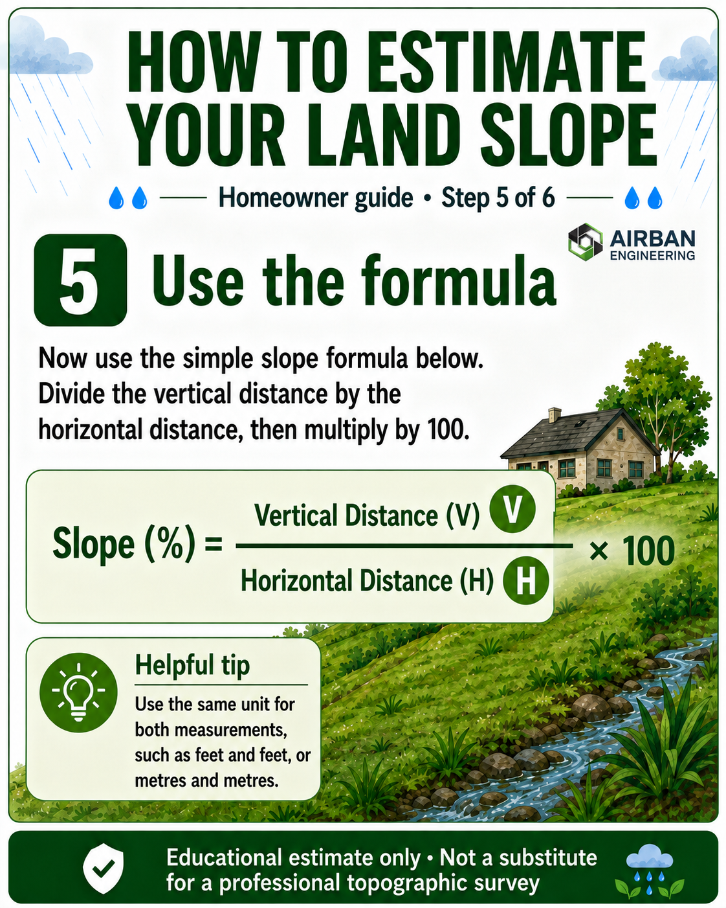
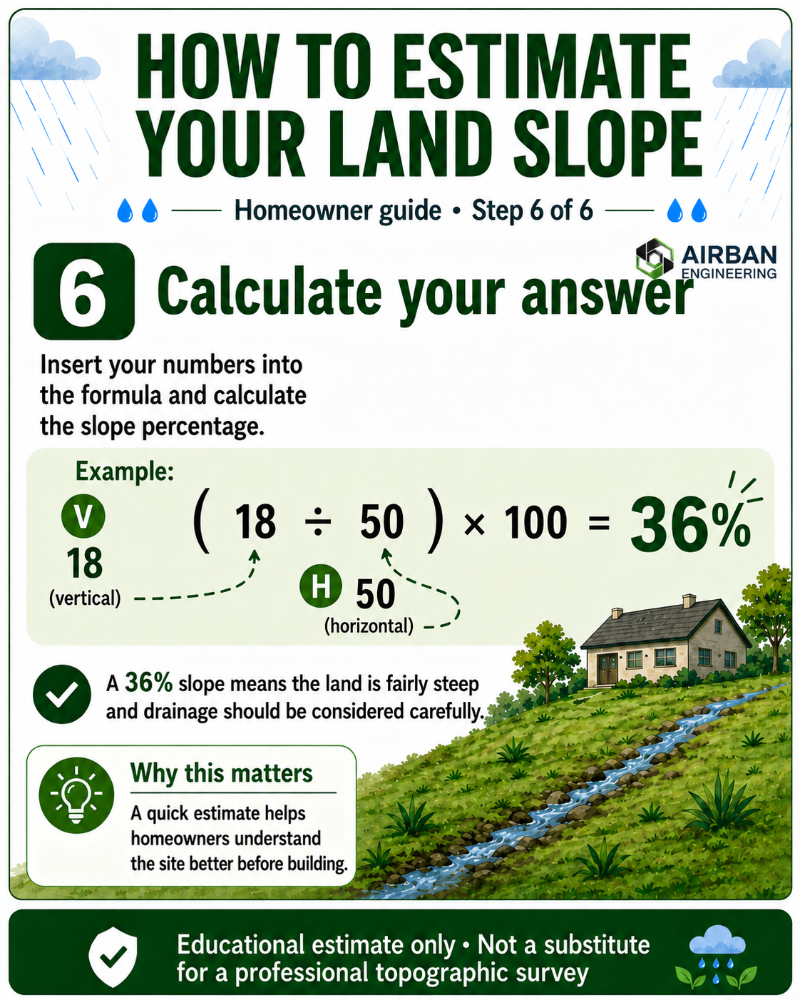

“Before you build, understand how your land rises, falls and drains.”
During the rainy season, many parts of Accra and other areas in Ghana experience flooding, poor drainage, erosion and waterlogging. While flooding is not caused by slope alone, understanding the slope of your land can help you ask better questions before building, filling, fencing or buying a plot.
This guide shows a simple method any homeowner can use to get a rough idea of how steep their land is. It is not meant to replace a professional survey. Instead, it is an educational exercise to help you understand your land better before making bigger decisions.
What You Will Learn
- How to choose the part of the land to test
- How to create a level reference line
- How to measure horizontal distance
- How to measure vertical rise or drop
- How to use the slope formula
- How to interpret your slope percentage
Step 1 — Pick a Test Section
Start by choosing one part of the land to check. This could be the area where you plan to build, the part where water appears to flow during rainfall, or the section that looks noticeably higher or lower than the rest of the plot.
Do not assume the whole land has the same slope. One side of a plot can be gentle while another side may drop sharply. That is why it is better to test the area that matters most first.
Step 2 — Set a Level Line
Place a straight plank across the slope or stretch a taut string between two points. Then use a spirit level to make sure the plank or string is horizontal. This level line becomes your reference for measuring the slope.
This step is important because slope is not measured by following the ground surface. You need a level horizontal reference so that your vertical rise or drop can be measured properly.

Step 3 — Measure the Horizontal Distance
Next, measure the full length of the level plank or the level string span from one end to the other. This is your horizontal distance. In the formula, we call this value H.
Horizontal distance is the distance across the land, not the distance along the sloping ground. This distinction matters because using the wrong distance can give you a misleading slope percentage.

Step 4 — Measure the Vertical Rise or Drop
Now measure the vertical gap between the lower ground and the level plank or string. This tells you how much the land rises or drops over the measured horizontal distance. In the formula, we call this value V.
This is the measurement many people overlook. The bigger the vertical gap compared with the horizontal distance, the steeper the land is.

Step 5 — Use the Formula
Once you have your vertical distance and horizontal distance, you can estimate the slope percentage using a simple formula.
Slope Percentage Formula
Slope (%) = Vertical Distance ÷ Horizontal Distance × 100
Use the same unit for both measurements. If the vertical distance is measured in feet, the horizontal distance should also be in feet. If you are using metres, use metres for both values.

Step 6 — Calculate Your Answer
Let us say your vertical distance is 18 feet and your horizontal distance is 50 feet. Your calculation will be:
Worked Example
(18 ÷ 50) × 100 = 36%
A 36% slope means the land is fairly steep. This does not automatically mean the land is bad, but it does mean drainage, access, filling, retaining structures, erosion control and building platform levels should be considered carefully.

How to Read Your Result
Your slope percentage gives you a general idea of how the land behaves. The higher the percentage, the steeper the land is likely to be.
- 0–5%: Nearly flat. Still check for waterlogging, poor drainage and low-lying areas.
- 5–10%: Gentle slope. Usually easier to manage, but drainage direction still matters.
- 10–20%: Moderate slope. Building levels, access and surface runoff should be planned carefully.
- 20%+: Steep slope. Professional topographic survey and drainage planning are strongly advised.
Why This Matters Before Building
Many building problems begin before construction starts. A landowner may see a dry plot during the dry season and assume it is safe, only to discover during heavy rainfall that water collects on the land or flows through it.
A simple slope estimate helps you become more aware of your site. It helps you ask better questions such as:
- Where does rainwater naturally flow?
- Is the proposed building area higher or lower than the surroundings?
- Will filling or cutting be needed?
- Could the land require a retaining wall?
- Should I request a topographic survey before building?
These are the kinds of questions that can save homeowners from costly mistakes.
Planning to Build or Buy Land?
Airban Engineering can help you understand your land better through professional land surveying, topographic surveys, boundary checks, terrain assessment and land documentation support.
Send us your location and project details. We’ll guide you step by step.
Talk to Airban Engineering on WhatsAppNeed professional land surveying services in Ghana? Visit our land surveying page here.